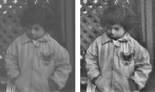
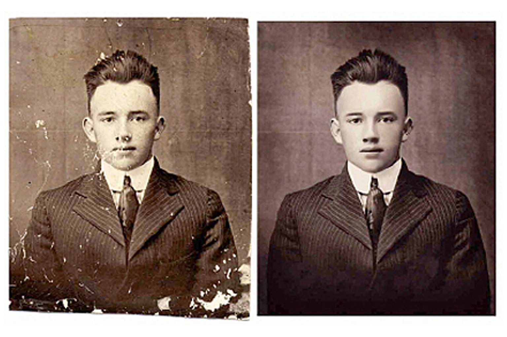
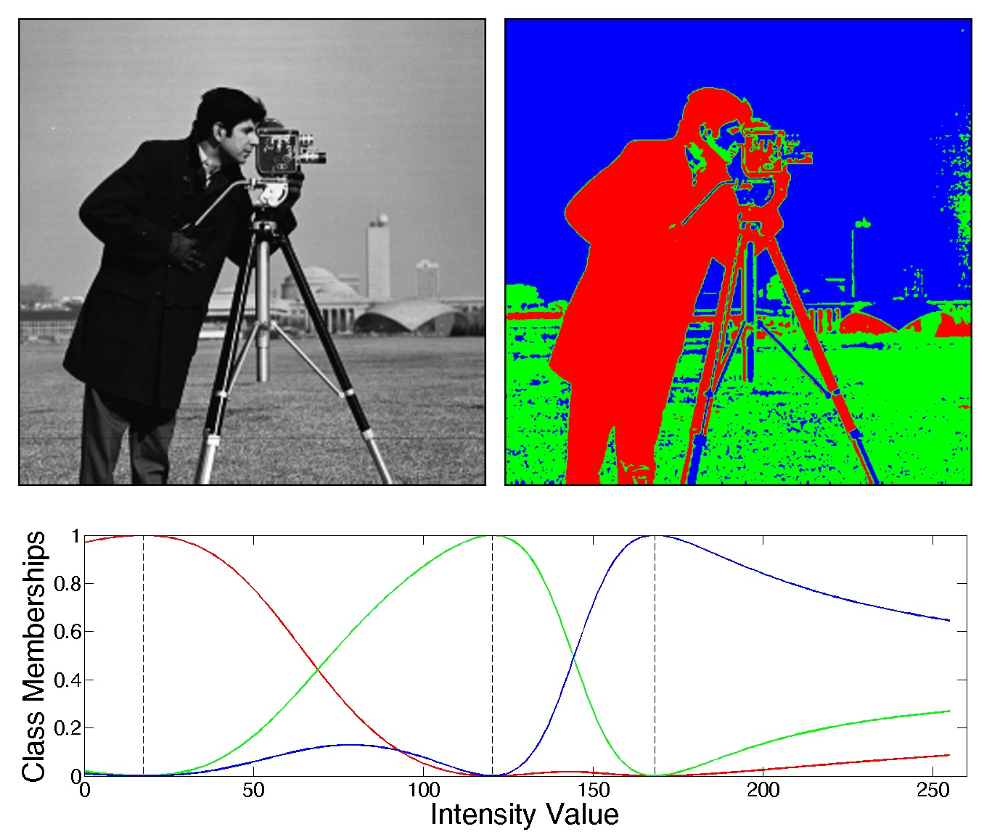
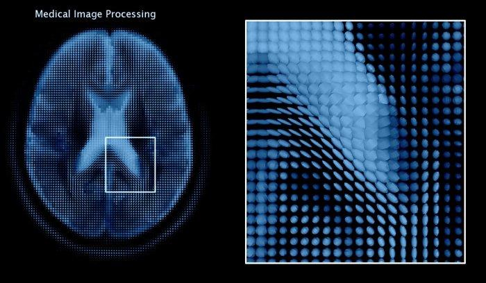
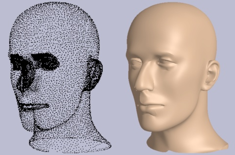

Citra Digital
Bentuk nyata dari suatu citra digital adalah sebagai suatu susunan matriks. Gambapngr terususun atas pixel-pixel yang tertata dalam barisan dan kolom. Kerapatan antar pixel dapat merupakan resolusi dari gambar. Adapun jenis gambar berwarna dengan komponen RGB (Red, Green, Blue), nilai warna pixel berkisar dari 0 sampai 255 (angka non-desimal). Nilai 255 akan menghasilkan warna putih dan 0 sebaliknya, yaitu hitam.
Adapun beberapa operasi pengolahan gambar digital adalah sebagai berikut:

Memperbaiki kualitas gambar, contohnya dengan penajaman gambar, perbaikan kontras, perbaikan RGB curve.
Memperbaiki gambar dari cacat, contohnya dengan menghilangkan noise.
Memecah gambar menjadi beberapa bagian.
Mengekstraksi informasi yang ada pada suatu gambar, dan merepresentasikannya dalam bentuk yang terukur, contohnya mencari bentuk geomteri atau pola dari suatu gambar.
Membentuk ulang suatu objek dari proyeksi objek yang lain, misalnya saja rontgen.